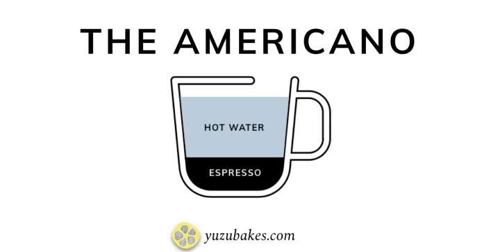

Americanos are popular breakfast drinks and thought to have originated during World War II. Soldiers would add water to their coffee to extend their rations farther. The water dilutes the espresso while still maintaining a high level of caffeine.